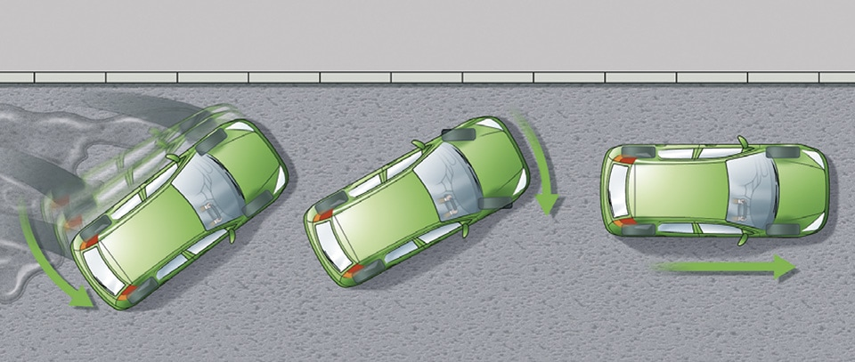
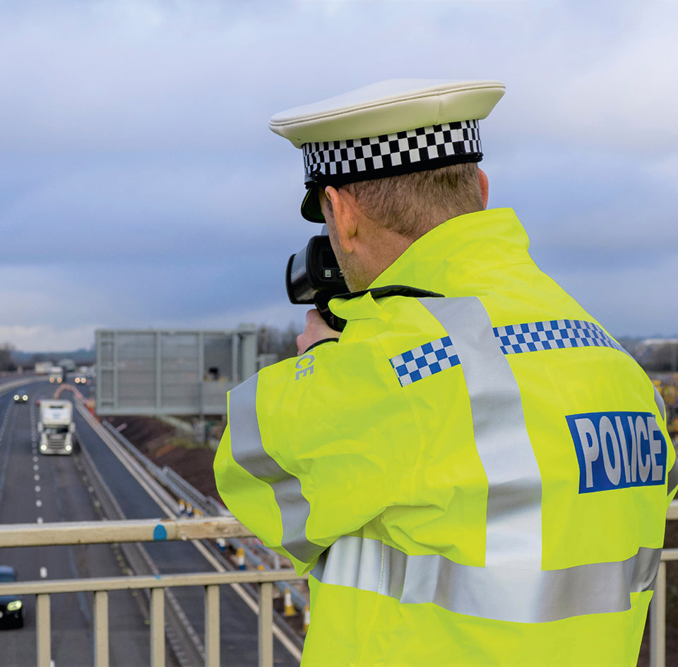
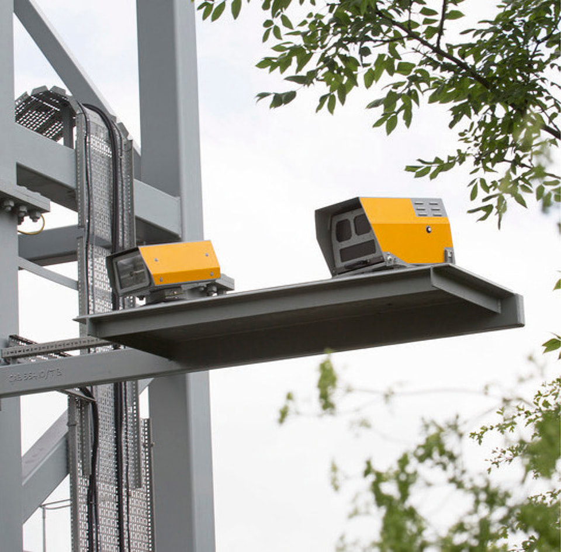
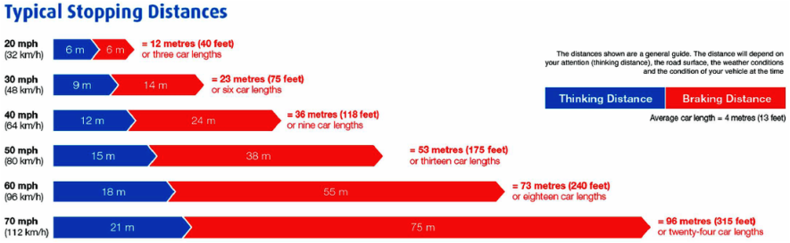
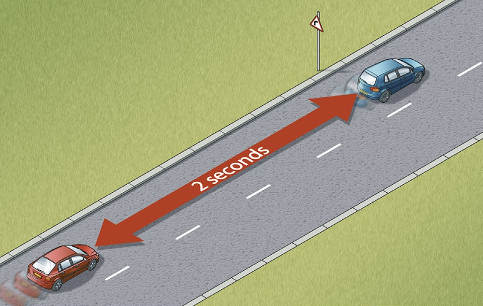

General rules, techniques and advice for all drivers and riders (103 to 158)
5. Control of the vehicle (117 to 126)
Braking
117
In normal circumstances. The safest way to brake is to do so early and lightly. Brake more firmly as you begin to stop. Ease the pressure off just before the vehicle comes to rest to avoid a jerky stop.
In normal circumstances. The safest way to brake is to do so early and lightly. Brake more firmly as you begin to stop. Ease the pressure off just before the vehicle comes to rest to avoid a jerky stop.
118
In an emergency. Brake immediately. Try to avoid braking so harshly that you lock your wheels. Locked wheels can lead to loss of control.
In an emergency. Brake immediately. Try to avoid braking so harshly that you lock your wheels. Locked wheels can lead to loss of control.
119
Skids. Skidding is usually caused by the driver braking, accelerating or steering too harshly or driving too fast for the road conditions. If skidding occurs, remove the cause by releasing the brake pedal fully or easing off the accelerator. Turn the steering wheel in the direction of the skid. For example, if the rear of the vehicle skids to the right, steer immediately to the right to recover.
Skids. Skidding is usually caused by the driver braking, accelerating or steering too harshly or driving too fast for the road conditions. If skidding occurs, remove the cause by releasing the brake pedal fully or easing off the accelerator. Turn the steering wheel in the direction of the skid. For example, if the rear of the vehicle skids to the right, steer immediately to the right to recover.

Rule 119: Rear of the car skids to the right. Driver steers to the right
120
ABS. If your vehicle is fitted with anti-lock brakes, you should follow the advice given in the vehicle handbook. However, in the case of an emergency, apply the footbrake firmly; do not release the pressure until the vehicle has slowed to the desired speed. The ABS should ensure that steering control will be retained, but do not assume that a vehicle with ABS will stop in a shorter distance.
ABS. If your vehicle is fitted with anti-lock brakes, you should follow the advice given in the vehicle handbook. However, in the case of an emergency, apply the footbrake firmly; do not release the pressure until the vehicle has slowed to the desired speed. The ABS should ensure that steering control will be retained, but do not assume that a vehicle with ABS will stop in a shorter distance.
121
Brakes affected by water. If you have driven through deep water your brakes may be less effective. Test them at the first safe opportunity by pushing gently on the brake pedal to make sure that they work. If they are not fully effective, gently apply light pressure while driving slowly. This will help to dry them out.
Brakes affected by water. If you have driven through deep water your brakes may be less effective. Test them at the first safe opportunity by pushing gently on the brake pedal to make sure that they work. If they are not fully effective, gently apply light pressure while driving slowly. This will help to dry them out.
122
Coasting. This term describes a vehicle travelling in neutral or with the clutch pressed down. It can reduce driver control because
Coasting. This term describes a vehicle travelling in neutral or with the clutch pressed down. It can reduce driver control because
- engine braking is eliminated
- vehicle speed downhill will increase quickly
- increased use of the footbrake can reduce its effectiveness
- steering response will be affected, particularly on bends and corners
- it may be more difficult to select the appropriate gear when needed.
The Driver and the Environment
123
You MUST NOT leave a parked vehicle unattended with the engine running or leave a vehicle engine running unnecessarily while that vehicle is stationary on a public road. Generally, if the vehicle is stationary and is likely to remain so for more than a couple of minutes, you should apply the parking brake and switch off the engine to reduce emissions and noise pollution. However it is permissible to leave the engine running if the vehicle is stationary in traffic or for diagnosing faults.
Law CUR regs 98 & 107
You MUST NOT leave a parked vehicle unattended with the engine running or leave a vehicle engine running unnecessarily while that vehicle is stationary on a public road. Generally, if the vehicle is stationary and is likely to remain so for more than a couple of minutes, you should apply the parking brake and switch off the engine to reduce emissions and noise pollution. However it is permissible to leave the engine running if the vehicle is stationary in traffic or for diagnosing faults.
Law CUR regs 98 & 107
Speed limits
124
You MUST NOT exceed the maximum speed limits for the road and for your vehicle (see the speed limits table). A speed limit of 30 mph (48 km/h), or 20mph (32km/h) in Wales, generally applies to all roads with street lights (excluding motorways) unless signs show otherwise.
You MUST NOT exceed the maximum speed limits for the road and for your vehicle (see the speed limits table). A speed limit of 30 mph (48 km/h), or 20mph (32km/h) in Wales, generally applies to all roads with street lights (excluding motorways) unless signs show otherwise.
† 60 mph (96 km/h) if exceeding 12 metres in overall length.
†† 60 mph (96 km/h) if articulated or towing a trailer.
For speed limits that apply to special types of vehicles, such as oversized vehicles, see Further reading.
Locally set speed limits may apply, for example
†† 60 mph (96 km/h) if articulated or towing a trailer.
For speed limits that apply to special types of vehicles, such as oversized vehicles, see Further reading.
Locally set speed limits may apply, for example
- 20 mph (32 km/h) in some built-up areas
- 50 mph (80 km/h) on single carriageways with known hazards
- variable speed limit signs are used on some motorways and dual carriageways to change the maximum speed limit.

Rule 124: Examples of speed enforcement

Rule 124: Examples of speed enforcement
125
The speed limit is the absolute maximum and does not mean it is safe to drive at that speed irrespective of conditions. Unsafe speed increases the chances of causing a collision (or being unable to avoid one), as well as its severity. Inappropriate speeds are also intimidating, deterring people from walking, cycling or riding horses. Driving at speeds too fast for the road and traffic conditions is dangerous. You should always reduce your speed when
The speed limit is the absolute maximum and does not mean it is safe to drive at that speed irrespective of conditions. Unsafe speed increases the chances of causing a collision (or being unable to avoid one), as well as its severity. Inappropriate speeds are also intimidating, deterring people from walking, cycling or riding horses. Driving at speeds too fast for the road and traffic conditions is dangerous. You should always reduce your speed when
- the road layout or condition presents hazards, such as bends
- sharing the road with pedestrians, particularly children, older adults or disabled people, cyclists and horse riders, horse drawn vehicles and motorcyclists
- weather conditions make it safer to do so
- driving at night as it is more difficult to see other road users.
126

Typical Stopping Distances
Stopping Distances. Drive at a speed that will allow you to stop well within the distance you can see to be clear. You should
- leave enough space between you and the vehicle in front so that you can pull up safely if it suddenly slows down or stops. The safe rule is never to get closer than the overall stopping distance (see Typical Stopping Distances diagram, shown below)
- allow at least a two-second gap between you and the vehicle in front on roads carrying faster-moving traffic and in tunnels where visibility is reduced. The gap should be at least doubled on wet roads and increased still further on icy roads
- remember, large vehicles and motorcycles need a greater distance to stop. If driving a large vehicle in a tunnel, you should allow a four-second gap between you and the vehicle in front.

Rule 126: Use a fixed point to help measure a two-second gap
Tailgating is where the gap between you and the vehicle in front is too small for you to be able to stop safely if the vehicle in front suddenly brakes.
Tailgating is dangerous, intimidating and can cause collisions, especially when driving at speed. Keeping a safe distance from the vehicle in front gives you time to react and stop if necessary. Dangerous and careless driving offences, such as tailgating, are enforced by the police.
Tailgating is dangerous, intimidating and can cause collisions, especially when driving at speed. Keeping a safe distance from the vehicle in front gives you time to react and stop if necessary. Dangerous and careless driving offences, such as tailgating, are enforced by the police.